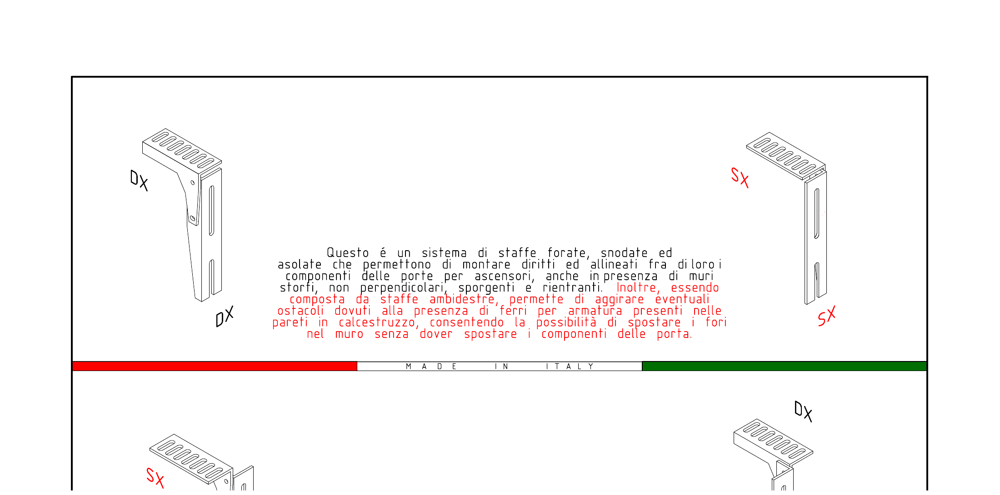

Il Nostro Catalogo Tecnico
Tutto quello che ci chiedi
in un PDF.
26 tavole tecniche, 27 codici prodotto, tutte le dimensioni in millimetri. Il catalogo che usi per preventivare al tuo cliente oggi, e per ordinarci le staffe domani. Spessori, fori, angoli, snodi — tutto documentato. Made in Italy, garanzia produttore.
Catalogo completo delle 27 staffe Panev per porte di piano di ascensori: staffe Tipo A (angolari brevettate), Tipo B (dritte con asole), Tipo C (ambidestre DX/SX), accessori e componenti complementari. Disponibile come PDF scaricabile con dimensioni, spessori, abbinamenti e istruzioni di montaggio. Produzione Made in Italy, materiali certificati UNI EN 10025, compatibilità UNI EN 81.

Sfoglia il Catalogo Tecnico
28 tavole tecniche con disegni isometrici, codici prodotto e dimensioni
⬇ Download PDFGamma Staffe per Porte
Sistema brevettato di staffe per porta di piano — forate, snodate, asolate, ambidestre DX/SX.
Consentono il montaggio anche su muri storti, sporgenti, rientranti e pareti con armatura in calcestruzzo.
Tipo A — Staffa Angolare Fissaggio Porta di Piano
Elemento angolare con piastra orizzontale forata e lama verticale asolata. Aggancio alla parete + supporto verticale della porta.
Tipo B — Staffa Dritta (Lama Verticale) con Asole
Lama verticale forata con asole per regolazione angolare ±7°/±8°. Si abbina alla rispettiva staffa tipo A. Disponibile in versione DX e SX.
Gamma Staffe per Contrapeso
Staffe per il fissaggio delle guide del contrapeso. Ogni impianto è composto da un Supporto (SU / SD / SC) abbinato a una Staffa Guide (SG). Range di estensione in rosso su ogni tavola.
Supporti SU — Larghezza 220mm, Spessore 5mm
Supporto angolare con braccio orizzontale e piastra verticale asolata. Range di estensione variabile (rosso in catalogo).
Supporti SD — Larghezze 150mm e 220mm, Spessore 5mm
Supporti SC — Barra Piatta, Spessore 4mm
Barra piatta con asole multiple per range di estensione. Sezioni da 50 a 90mm. Lunghezze 200 e 220mm.
* Misura A da definire secondo progetto
Staffe Guide SG — Si abbinano ai supporti SU / SD / SC
Barra piatta perforata (asole), spessore 4mm. Sezioni 50, 60, 80mm. Lunghezze 130, 150, 170, 190, 220mm.
Abbinamento tramite Braccio Rigido
Per installazioni su muri in calcestruzzo con ferri di armatura. COD. SN 60 65 + COD. SN 65 200 + BRACCIO 160 190.
Hai bisogno del codice giusto?
Scarica il catalogo completo con tutti i disegni tecnici, oppure contattaci direttamente: i nostri tecnici ti indicano il codice corretto per il tuo impianto.